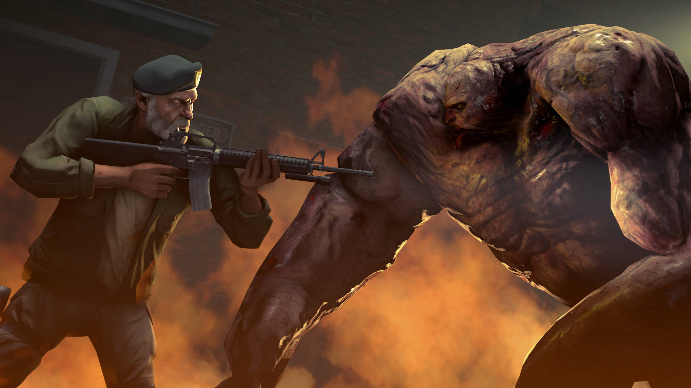
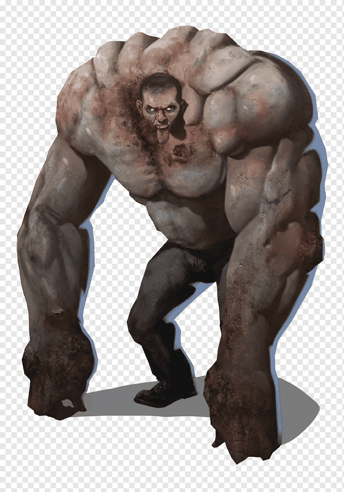

El Tank existió desde el primer Left 4 Dead, debido a la clase de infectado especial que es probablemente fue el último en mutar de la primera ola de infectados especiales. Sabes que el Tank esta cerca cuando el suelo retumba y objetos salen disparados al aire, si eso pasa lo mejor es correr.
Este es el infectado con más fuerza destructiva de todos y la discreción no esta en su lista de habilidades. El Tank llega destruyendo cualquier cosa que se encuentre e incluso puede romper partes del suelo para lanzarlo en contra de los sobrevivientes. Puede embestir contra los sobrevivientes y empujarlos a la lejanía bajando demasiada vida con un simple golpe y parece invencible al resistir grandes cantidades de disparos.

Al Tank se le puede llamar una fuerza imparable, pero sin un objeto inamovible.
El Tank es una gran bala de musculo bañada en sangre, sus brazos son de un tamaña exagerado. A pesar de que aún sus extremidades sean reconocibles y aún conserve prendas cómo sus pantalones o las facciones de su rostro, el Tank no tiene ningún rastro de haber tenido humanidad.

Se considera que este infectado no tiene debilidades, sino que se deben realizar distintas estrategias para vencerle cómo lanzar bilis de Boomer y atacar al Tank mientras es atacado por otro infectados, lanzarle granadas o la que se ha demostrado ser más efectiva, lanzar bombas caseras incendiando al Tank. Todos estos medios no mataran al Tank de manera instantánea así que debe ser asistido por los sobrevivientes atacando con todas las municiones que tengan a este infectado.
Se asegura que el origen del Tank es una fusión de la gripe verde junto a los residuos que tuvieron los esteroides en una persona. La actitud errática del Tank viene por aquella mutación y su cambio físico llevo al extremo su cuerpo llevando a su límite, es por ello que el Tank al evolucionar su mutación fue endureciendo su cuerpo. Esta es la teoría más aceptada del origen de este infectado.